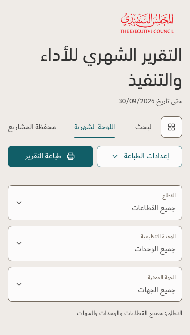
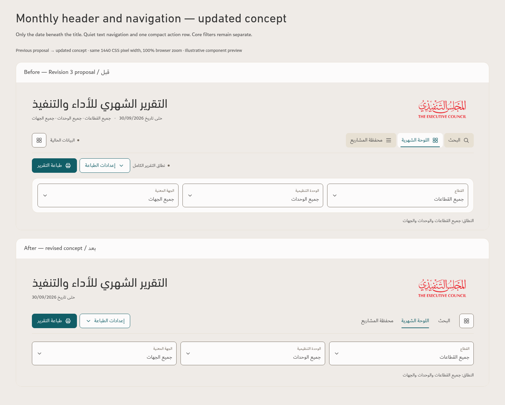
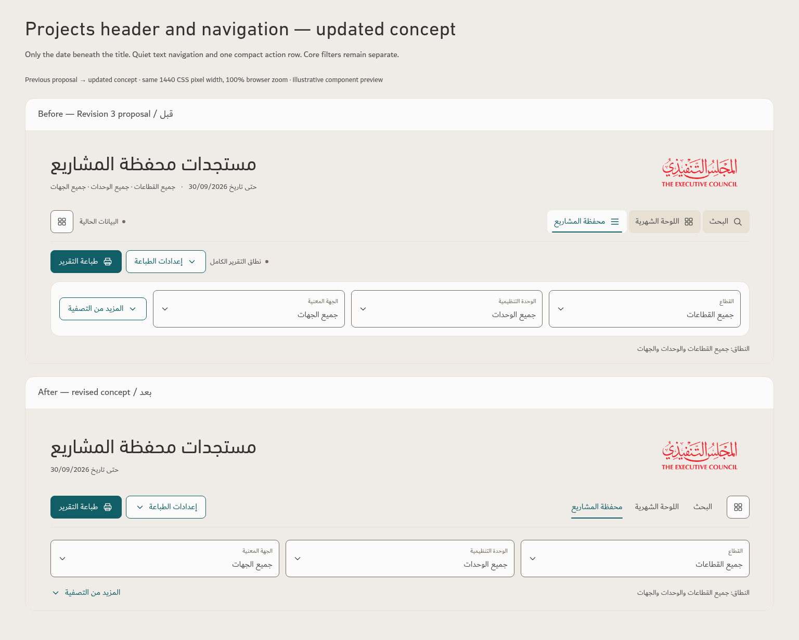
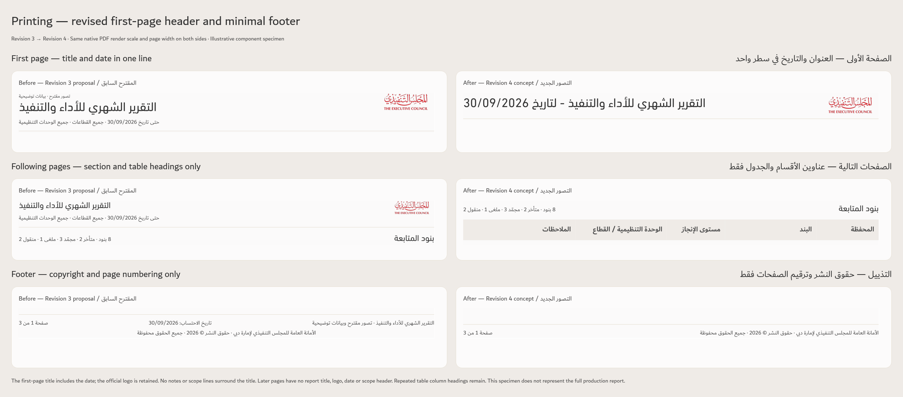
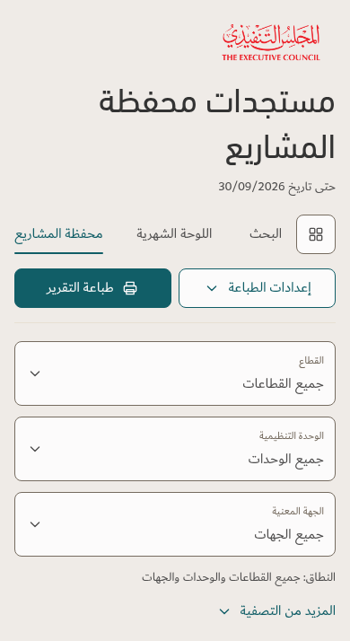

Monthly


Revision 4 follows your latest clarification. The screen title keeps only the date beneath it. The first printed title includes the date; no notes appear above or below. Approved typography, colors, logo and data definitions remain.
The before panels show the previous Revision 3 proposal. The after panels show this updated concept. The working app is unchanged.
| Component | Previous proposal | Updated concept |
|---|---|---|
| Screen title | Title, date and scope | Title with the date beneath it only |
| Navigation | Filled tabs and separate action rows | Quiet text links, active Teal underline, one compact row |
| Filters | Fields inside a second panel | Separate core fields; scope beneath the fields |
| First printed header | Notes around the title; separate date and scope | Official logo and report title including the date only |
| Following printed pages | Repeated report title, logo and context | Section and table headings only |
| Print footer | Report context, date, copyright and page count | Copyright and page numbers only |
| Screen footer | File and calculation metadata | Copyright only in this concept |
Both panels are captured at the same 1440 CSS pixel width, device scale 1 and 100% browser zoom. Open an image to view its native size.


Title and logo on the first page only; no report masthead on later pages. Copyright and page numbers are the only footer content.
التقرير الشهري للأداء والتنفيذ - لتاريخ 30/09/2026

| Element | Font | Size | Treatment |
|---|---|---|---|
| Screen title | DIN Next Arabic Regular | 38px | Charcoal #333333 |
| Screen date | Dubai Regular | 14px | Ink #4F4E4E |
| Navigation / actions | Dubai Regular | 16px · minimum 44px target | Ink / Teal #115E67 |
| Filter labels / values | Dubai Regular | 12px / 16px · minimum 72px field | Taupe / Ink on Paper |
| Icons | Existing outline SVG | 20px in minimum 44px target | Existing palette |
| First printed title and date | DIN Next Arabic Regular | 24pt | Charcoal |
| Printed section headings | DIN Next Arabic Regular | 16pt | Charcoal |
| Printed table headings | Dubai Bold | 13.5pt | Ink on Linen #EFEBE7 |
| Printed table / status badges | Dubai Regular | 13.5pt · 1.6 line spacing | Approved neutral text / status colors |
| Print footer | Dubai Regular | 10.5pt | Ink |
A4 landscape, 10mm margins and content-driven pagination. The entity filter and its selected value stay hidden in print; its effect on report membership remains. Source notes and the SLC explanation remain in the report body.
390 CSS pixel captures. Text sizes remain readable; controls retain 44px targets.


Three illustrative component pages with the same eight frozen records as the previous proposal. This specimen does not predict the page count of the full operational report.